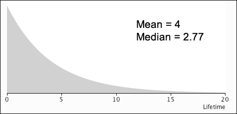

Bias and standard error can be used to compare alternative estimators.
Samples from a normal distribution
Consider a random sample of \(n\) values from a normal distribution with known standard deviation,
\[ X \;\; \sim \; \; \NormalDistn(\mu, \;\;\sigma^2 = 0.2^2) \]Since the normal distribution is symmetric, both its mean and median are \(\mu\), so is the sample mean or sample median a better estimator?
\[ \overline{X} \;\; \sim \; \; \NormalDistn\left(\mu, \;\;\sigma_{\overline{X}}^2 = \frac {0.2^2} n \right) \]The sample median, \(\tilde{X}\), has a harder distribution but, in large samples, there is an approximate result,
\[ \tilde{X} \;\; \underset{\text{approx}}{\sim} \; \; \NormalDistn\left(\mu, \;\;\sigma_{\tilde{X}}^2 = \frac {0.2^2} n \times 1.571 \right) \]Both estimators are therefore unbiased, but the standard error of the mean, \(\overline{X}\), is lower than that of the median, \(\tilde{X}\), so the sample mean is the better estimator.
Samples from a skew distribution
On the other hand, consider samples from the following skew distribution.

If the median of this distribution, \(\gamma\), was unknown, the obvious estimator would be the median of a random sample, \(\tilde{X}\).
The distributions of the sample mean and sample median both have similar standard errors. However
\[ E[\overline{X}] \;\; = \; \; \mu \;\;=\;\; 4 \]so the sample mean has a bias of 1.23 when it is used to estimate this distribution's median, whereas the sample median is approximately unbiased. Moreover, the sample mean's bias does not decrease as \(n\) increases, so it is not a consistent estimator.
The sample median would be the better estimator to use to estimate the median of such a skew distribution.